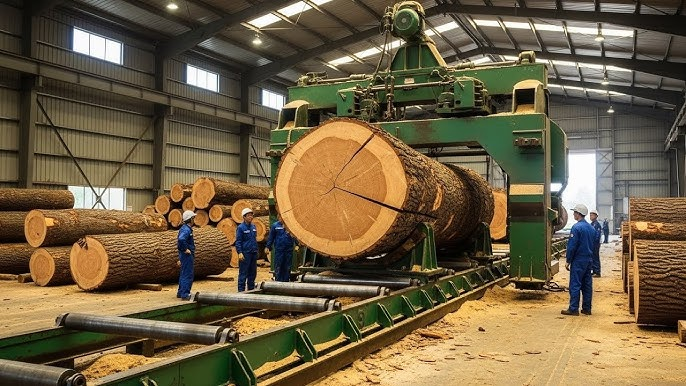
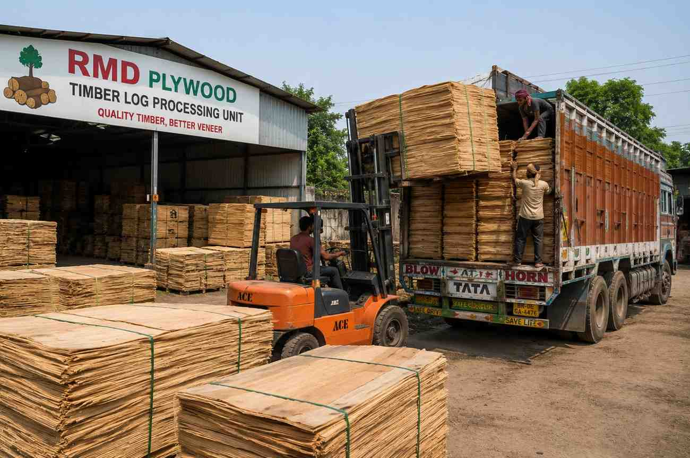
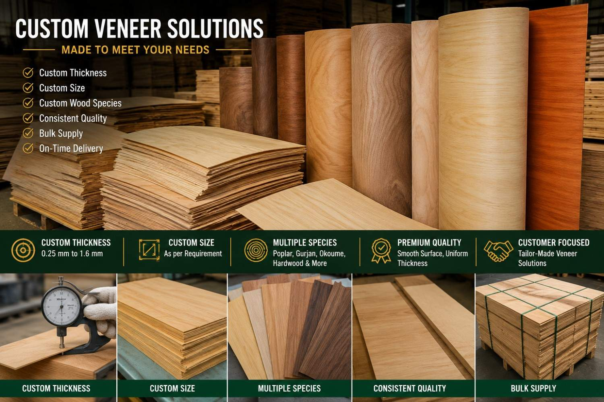
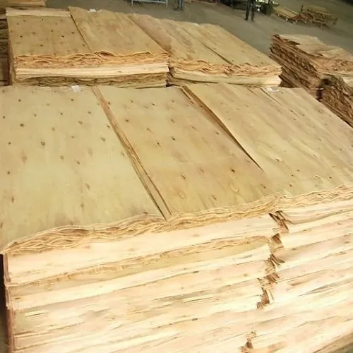
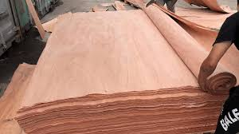
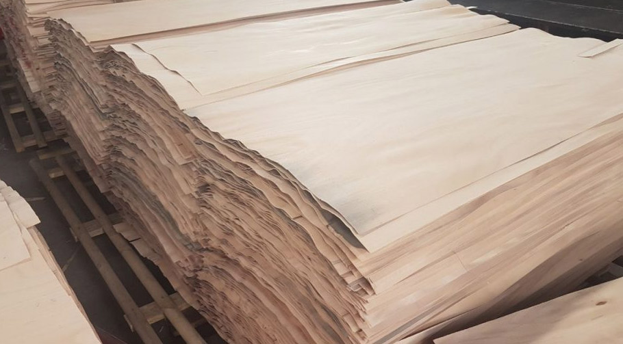
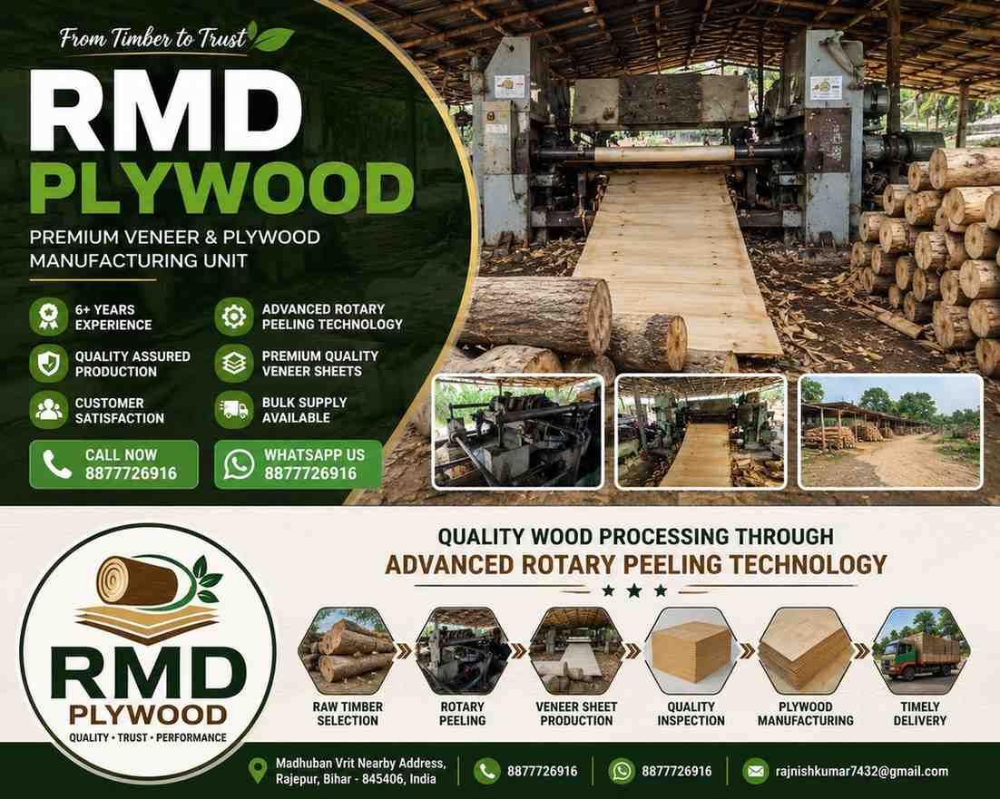

Premium Wood Veneer Manufacturing Unit
उच्च गुणवत्ता वाले Wood Veneer निर्माण में भरोसेमंद नाम
📱 WhatsApp UsRMD Plywood Rajepur, Bihar में स्थित एक विश्वसनीय Wood Veneer Manufacturing Unit है। हम उच्च गुणवत्ता वाले Veneer Products का निर्माण करते हैं और विभिन्न plywood industries, dealers तथा bulk buyers को supply करते हैं।
हम आधुनिक Rotary Peeling Technology का उपयोग करके उच्च गुणवत्ता वाले Veneer Sheets तैयार करते हैं। हमारा लक्ष्य ग्राहकों को बेहतरीन गुणवत्ता, समय पर डिलीवरी और भरोसेमंद सेवा प्रदान करना है।
6+ Years Experience
✔ Advanced Manufacturing Process
✔ Quality Timber Selection
✔ Reliable Supply Network
✔ Bulk Orders Accepted
English
RMD Plywood is a trusted Wood Veneer Manufacturing Unit located in Rajepur, Bihar. We specialize in producing premium quality veneer products using advanced rotary peeling technology. Our commitment to quality, reliability and customer satisfaction has helped us serve plywood industries, dealers and bulk buyers for more than 6 years.
Premium quality veneer sheets manufactured from selected timber logs. उच्च गुणवत्ता वाली लकड़ी से निर्मित प्रीमियम वुड वीनियर शीट्स।
Thickness: 0.5 mm – 1.55 mm
High precision rotary cut veneer suitable for plywood industries.
Freshly processed veneer with uniform thickness and smooth finish.
Thickness: 0.25 mm – 0.60 mm
Decorative and premium veneer for superior surface quality.
Thickness: 1.2 mm – 1.6 mm (Average)
Strong and reliable core veneer for plywood manufacturing.
Advanced timber processing using modern rotary peeling technology.
Customized veneer products according to customer requirements.
Premium quality wood veneer sheets manufactured from carefully selected timber logs using advanced rotary peeling technology.
✔ Smooth Surface Finish
✔ Uniform Thickness
✔ Strong & Durable Quality
✔ Suitable for Plywood Industries
✔ Bulk Supply Available
हिन्दी:
उच्च गुणवत्ता वाली लकड़ी से निर्मित वुड वीनियर शीट्स, जो आधुनिक रोटरी पीलिंग तकनीक द्वारा तैयार की जाती हैं।
समान मोटाई, बेहतर गुणवत्ता और औद्योगिक उपयोग के लिए उपयुक्त।
📞 Contact for Latest Price
Premium quality rotary cut veneer produced using advanced spindle rotary peeling technology for consistent quality and high production efficiency.
Thickness: 0.5 mm – 1.55 mm
✔ Uniform Thickness
✔ Smooth Surface Finish
✔ High Production Capacity
✔ Excellent Bonding Strength
✔ Ideal for Plywood Manufacturing
✔ Bulk Orders Accepted
हिन्दी:
उन्नत रोटरी पीलिंग तकनीक द्वारा निर्मित उच्च गुणवत्ता वाला Rotary Cut Veneer।
समान मोटाई, बेहतर फिनिश और प्लाईवुड उद्योगों के लिए उपयुक्त।
📞 Contact for Latest Price
Premium quality Face Veneer manufactured from carefully selected timber logs to provide an attractive appearance and superior finishing for plywood and decorative applications.
Thickness: 0.25 mm – 0.60 mm
✔ Premium Surface Quality
✔ Smooth & Uniform Finish
✔ Decorative Appearance
✔ High Strength Bonding
✔ Suitable for Furniture & Plywood Industry
✔ Bulk Supply Available
हिन्दी:
उच्च गुणवत्ता वाली Face Veneer जो चयनित लकड़ी से तैयार की जाती है। यह बेहतर फिनिश, आकर्षक सतह और मजबूत बॉन्डिंग प्रदान करती है, जिससे यह फर्नीचर एवं प्लाईवुड उद्योग के लिए उपयुक्त बनती है।
📞 Contact for Latest Price
Professional timber log processing services using advanced rotary peeling technology to ensure maximum timber utilization, consistent veneer quality and efficient production.
✔ Quality Timber Selection
✔ Advanced Rotary Peeling Technology
✔ Efficient Log Utilization
✔ Consistent Production Quality
✔ Industrial Scale Processing
✔ Bulk Processing Capability
Applications:
Wood Veneer Production, Rotary Cut Veneer Manufacturing, Core Veneer Production and Plywood Industry Applications.
हिन्दी:
उन्नत रोटरी पीलिंग तकनीक द्वारा लकड़ी के लट्ठों (Timber Logs) का प्रोफेशनल प्रोसेसिंग कार्य किया जाता है। बेहतर गुणवत्ता, अधिक उत्पादन क्षमता और लकड़ी के अधिकतम उपयोग को सुनिश्चित किया जाता है।
🏭 High Capacity Processing Unit
📦 Bulk Orders Accepted
📞 Contact for More Information
Customized veneer solutions designed to meet specific customer requirements. We provide veneer products in different thicknesses, sizes and specifications for plywood manufacturers, furniture industries and bulk buyers.
✔ Custom Thickness Options
✔ Custom Size Requirements
✔ Bulk Order Production
✔ Industry-Specific Solutions
✔ Reliable Quality Control
✔ Timely Delivery Support
Available Customization:
• Veneer Thickness
• Sheet Dimensions
• Production Volume
• Packaging Requirements
• Bulk Supply Orders
हिन्दी:
ग्राहकों की आवश्यकता के अनुसार विशेष वीनियर समाधान उपलब्ध कराए जाते हैं। मोटाई, आकार, मात्रा एवं अन्य आवश्यकताओं के अनुसार कस्टम उत्पादन की सुविधा उपलब्ध है।
🏭 Manufacturing Support Available
📦 Bulk Orders Accepted
🚛 Reliable Dispatch & Delivery
📞 Contact for Custom Requirements
Take a look at our manufacturing facility, timber processing operations, veneer production and dispatch activities.
हमारी निर्माण इकाई, टिम्बर प्रोसेसिंग, वीनियर उत्पादन और डिस्पैच गतिविधियों की झलक।







Our manufacturing process follows modern production standards to ensure quality, consistency and reliability.
हमारी निर्माण प्रक्रिया आधुनिक उत्पादन मानकों का पालन करती है जिससे बेहतर गुणवत्ता, समानता और विश्वसनीयता सुनिश्चित होती है।
Carefully selected timber logs are chosen for premium veneer production.
Logs are prepared and processed using advanced machinery.
Modern rotary peeling technology is used to convert timber logs into veneer sheets.
Each veneer sheet is checked for uniform thickness and quality standards.
Products undergo strict quality inspection before dispatch.
Finished products are packed safely and delivered to customers.
Technical specifications of our veneer products.
हमारे वीनियर उत्पादों की तकनीकी जानकारी।
| Product | Thickness | Application |
|---|---|---|
| Rotary Cut Veneer | 0.5 mm – 1.55 mm | Plywood Manufacturing |
| Face Veneer | 0.25 mm – 0.60 mm | Decorative Surface Layer |
| Core Veneer | 1.2 mm – 1.6 mm | Plywood Core Production |
| Green Veneer | Custom | Industrial Processing |
| Wood Veneer Sheets | As Required | Furniture & Plywood Industry |
💰 Price: Contact us for latest market rates.
📦 Bulk Orders Available
We are committed to delivering premium quality veneer products with reliability, consistency and customer satisfaction.
हम उच्च गुणवत्ता वाले वीनियर उत्पाद, भरोसेमंद सेवा और ग्राहक संतुष्टि प्रदान करने के लिए प्रतिबद्ध हैं।
Trusted experience in wood veneer manufacturing and timber processing industry.
Modern machinery ensures precision, consistency and higher production efficiency.
Only carefully selected quality timber is used for production.
Strict inspection standards ensure consistent veneer thickness and quality.
We efficiently handle large volume orders for plywood manufacturers and dealers.
Timely packaging and dispatch support for smooth business operations.
Long-term relationships built on quality, trust and professional service.
If you are looking for premium quality wood veneer products, feel free to contact us.
यदि आप उच्च गुणवत्ता वाले Wood Veneer Products की तलाश में हैं, तो हमसे संपर्क करें।
📞 Phone: 8002876261
📱 WhatsApp: 8002876261
📧 Email: rajnishkumar7432@gmail.com
📍 Address:
Rajepur, Madhuban Vrit,
Bihar - 845406, India
🕒 Working Hours:
Morning 5:00 AM – Night 10:00 PM
Business Name: RMD Plywood
Industry: Wood Veneer Manufacturing Unit
Specialization: Wood Veneer Sheets, Rotary Cut Veneer, Green Veneer, Face Veneer, Core Veneer, Timber Log Processing & Custom Veneer Solutions
Experience: 6+ Years
Location: Rajepur, Madhuban Vrit, Bihar – 845406, India
Working Hours: Morning 5:00 AM – Night 10:00 PM
Order Type: Retail & Bulk Orders Available
Manufacturing Capacity: Industrial Scale Production
Supply Areas: Bihar, Uttar Pradesh, Jharkhand and Nearby Regions
Transportation: Available for Bulk Orders
Custom Orders: Accepted as per customer requirements